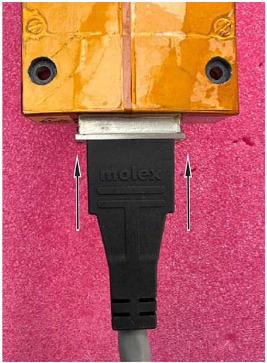
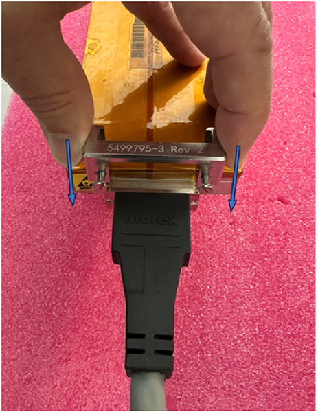
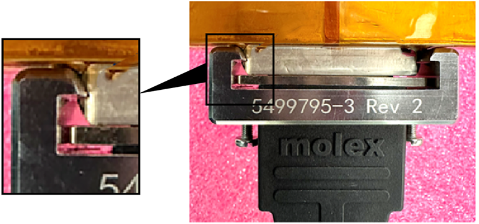
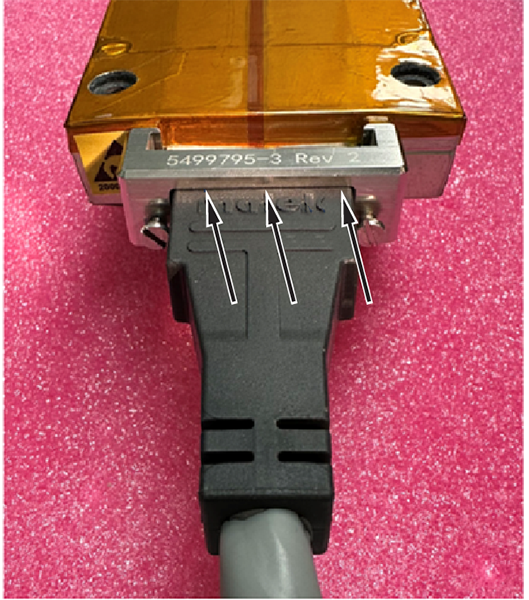
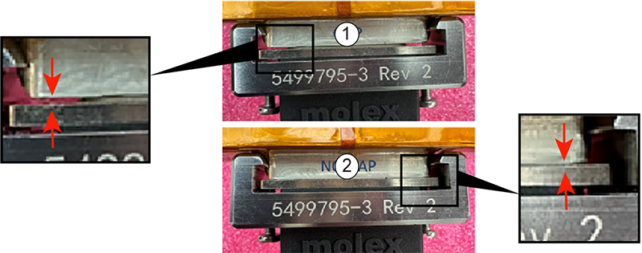
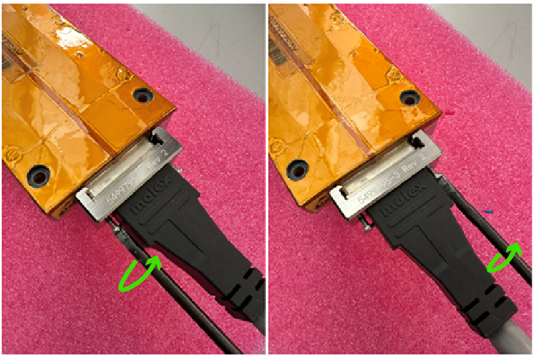

- Object ID: 00000018WIA3059DCB0GYZ
- Topic ID: id_2064197 Version: 1.4
- Date: Dec 2, 2024, 10:00:59 PM
Installing a detector module (DMOD) cable
Instructions to install a detector module (DMOD) cable.
Procedure
- Carefully align the cable connector with the DMOD and push straight in until it is seated.
Figure 1. Align the cable connector 
- Slide the clamp onto the DMOD cable connector, taking care to make sure that the clamp hooks are engaged into the matching hooks on the DMOD cable connector. See Figure 15.
Figure 2. Slide the clamp onto the DMOD cable connector 
- Visually make sure that the clamp hooks are engaged in the matching hook features in the DMOD cable connector.
Figure 3. Make sure that the clamp hooks are engaged 
- Visually make sure that the clamp hooks are engaged in the matching hook features in the DMOD cable connector.
Figure 4. Make sure that the clamp hooks are engaged 
- Tighten both screws by turning clockwise while maintaining downward pressure on the clamp to keep it seated against the black plastic. Note
- The screws will not go in all the way.
- Stop tightening the screws when the clamp has closed the gap between the cable connector and the DMOD and there is no looseness in the clamp.
Figure 5. Tighten until the gap is closed 
Item Description 1 Gap shown, tighten further 2 No gap, connection is good - If a torque tool is available, torque the screws to 0.5 to 0.7 N-m (0.010 ft. lb to 0.015 ft. lb).
Figure 6. Tighten or torque the screws 
- If a torque tool is not available, tighten the screws an additional 1/16th of a turn after the gap has closed.